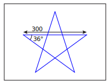
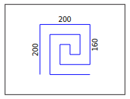

Vincent van Scratch
Mit Scratch kannst du kleine Kunstwerke malen. Die Malstifte sind etwas versteckt. Klicke unten links auf Erweiterung hinzufügen und dann auf Malstift.
lösche alles |
Mit diesem Befehl werden alle Malstriche gelöscht. |
schalte Stift ein |
Der Malstift wird eingeschaltet. Sobald sich die Figur bewegt, wird sie einen Strich zeichnen. |
schalte Stift aus |
Der Malstift wird ausgeschaltet. Wenn sich die Figur bewegt, wird kein Strich mehr gezeichnet. |
Das blaue Quadrat
Wir wollen nun zusammen ein Quadrat auf die Bühne zeichnen. Erstelle ein neues Scratchprojekt und übernimm den Code von Prog. 1. Damit die Figur nicht die gemalten Striche überdeckt, verkleinert man sie am besten auf 50%.
Wenn die grüne Flagge angeklickt gehe zu x:(-100) y:(-100) setze Richtung auf (90) Grad lösche alles schalte Stift ein wiederhole (4) mal gehe (200) er Schritt drehe dich nach rechts um (90) Grad ende
Prog. 1 – Die Katze zeichnet ein Quadrat.
Aufagbe
- Ändere das Programm so, dass das Quadrat im rechten, linken, oberen und unteren Teil der Bühne erscheint.
- Kannst du das Quadrat verkleinern und vergrössern?
- Schaffst du es, dass Quadrat etwas zu drehen?
Betrachten wir einige Befehle, mit denen du die Katze bewegen kannst.
gehe zu x:(0) y:(0) |
Mit diesem Befehl setzt du die Figur auf die Position (x,y) auf der Bühne setzen. |
setze Richtung auf (0) Grad |
Mit diesem Befehl kannst du die Figur drehen. |
gehe (10) er Schritt |
Die Figur schreitet eine bestimmte Anzahl von Schritten in die Richtung in die sie schaut. |
Aufagbe
Zeichne die folgenden Figuren auf die Bühne. Versuche sie so gut wie möglich in die Mitte zu platzieren.
- 
- 
Autoren: T. Jenni
Letzte Änderung: 14. Mai 2021

Einsteigerkurs für den BBC micro:bit von T. Jenni, et al. ist lizenziert unter einer Creative Commons Namensnennung - Nicht-kommerziell - Weitergabe unter gleichen Bedingungen 4.0 International Lizenz.